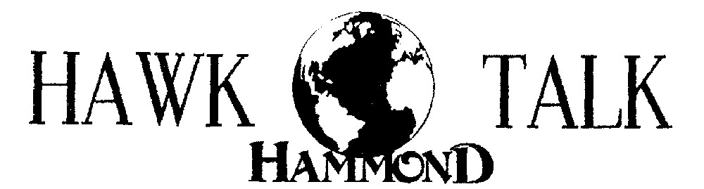

Hammond Hawk Talk and Literary Magazines (1990)
During my senior high-school year at Hammond School, I had the great privilege to share the job of editor-in-chief of the school newspaper Hawk Talk along with my brilliant friend Thomas Kennedy. Along the way, I got to work with many other talented writers and artists. It is one of my most cherished memories of high-school and was quite a valuable lesson in humility, too. Thanks to my friends who put so much effort into making it happen: Thorne Barrett, Kathy Boozer (Boone), Chad Brasington, Catherine Clark, Trent Gillespie, Eleanor Green (Schut), Amy Hollis, Alice Howell (Carter), Cameron Howell, John Kleckley, Kel McClanahan, George Meetze, Ted Mitchell, Mary Moore (Keever), Nick Papadea, Margaret Ellen Pender, Chapman Quantz, Leslie Robinson, Anne Sproul, Kerry Stubbs, Chris Walkup, Shawn Zeller (Gordon), and of course my dear twin brother Richard Davis.
Please enjoy all nine issues of the Hawk Talk for the 1989-1990 school year, linked below. And as a special bonus, I’ve also included the two literary magazines published that same year: Firefly Anthology edited by Cameron Howell and Thomas Kennedy and CWA edited by Kerry Stubbs and Kel McClanahan. These magazines feature many of the Hawk Talk contributors and many other fine writers and friends not listed above.
The type-setting quality of these documents really dates them. If my memory is correct, the Hawk Talk was compiled with the old Brøderbund Print Shop software on an Apple IIe computer, printed with a dot-matrix printer, and copied with a mimeograph machine. We chose that approach, rather than the traditional 6-column newspaper format, because the previous year saw only a single issue of the Hawk Talk and no literary magazines that I remember. We wanted to focus our efforts on writing and artistry, rather than the mechanics of getting the newspaper out the door. And in that sense, I think that it was a magnificent success.